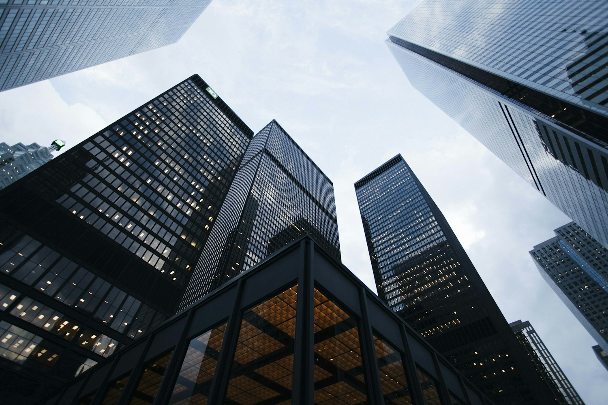
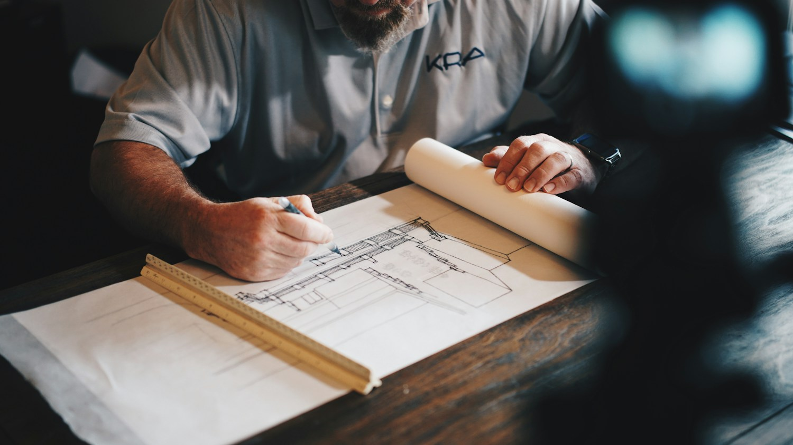
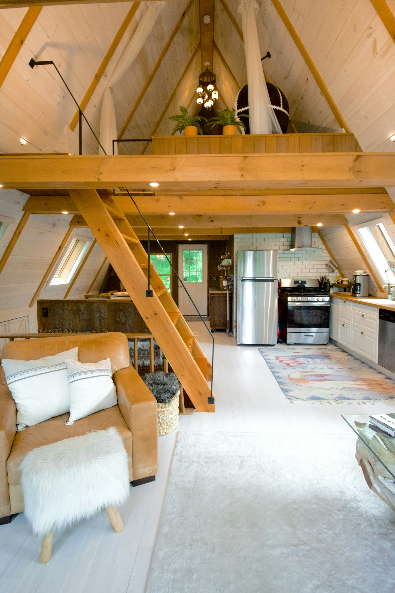

تصاویر زیر از منابع تصویری عمومی انتخاب شدهاند و صرفاً جنبه مرجع و الهام بصری دارند؛ این تصاویر، مستند واقعی زمین یا کارگاه پروژه نیستند.

نمای مرجع از طراحی فضای باز و ارتباط مسیرهای حرکتی

نمونهای از ترکیب مصالح و بازشوهای معماری

نمای مرجع از حجمپردازی و ارتباط ساختمان با محیط

نمونهای از فضای داخلی و جزئیات معماری
نمای مرجع از ترکیب حجم ساختمان و فضای پیرامونی
منابع تصاویر: Unsplash. تصاویر با ماهیت نمونه معماری استفاده شدهاند، نه بهعنوان مستند پروژه.